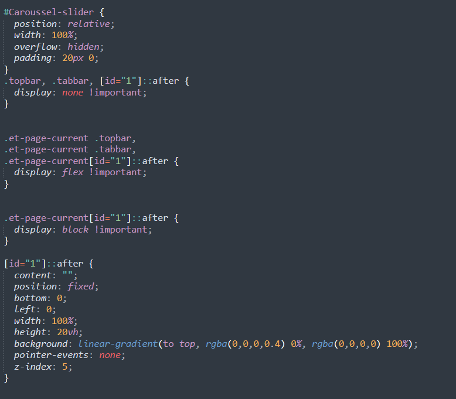
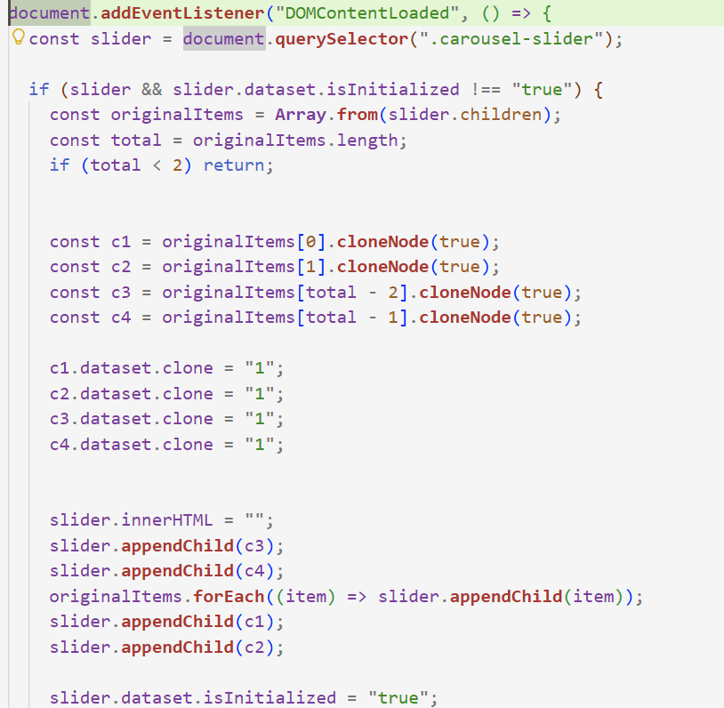
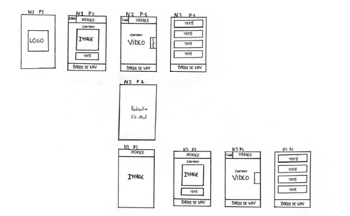
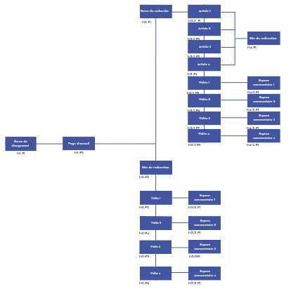
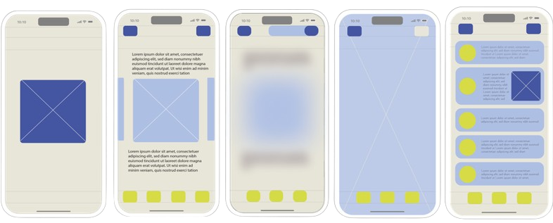
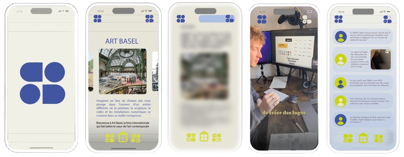
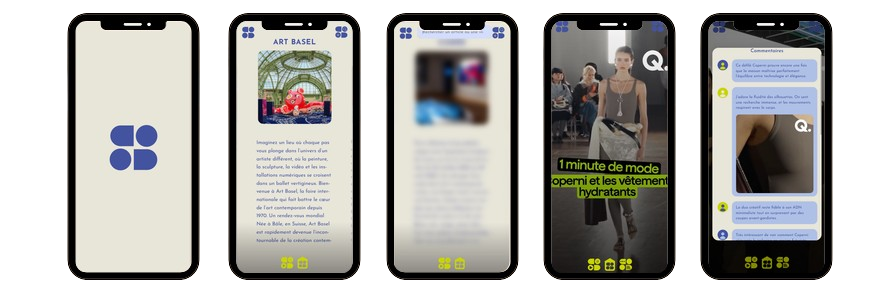

Start
application
Ce projet est un premier travail de design UI/UX qui porte sur la création de l’interface d’une application appelée START, qui permet de découvrir, chaque semaine, une sélection d’articles et d’expositions autour d’un thème spécifique. L’objectif était de concevoir une navigation rapide, intuitive et agréable, en s’inspirant des réseaux sociaux actuels.
Codage



Zoning

Arborescence

Wireframe

Design

Résultat final
